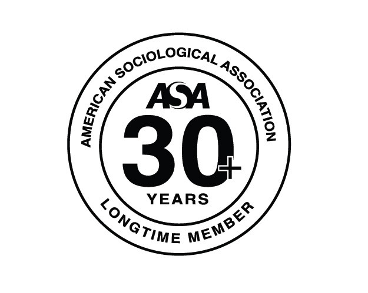
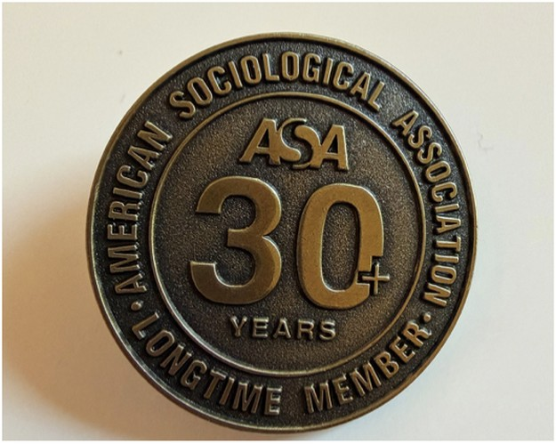

Brand Identity Design | Merchandise Design | Recognition Award Design
Created for the American Sociological Association (ASA), this project involved designing a commemorative lapel pin to recognize members with 30 or more years of association membership. The design emphasizes timeless elegance and professionalism, resulting in a classic keepsake that reflects the organization’s legacy while giving long-standing members a meaningful symbol of recognition.
Adobe Illustrator • Adobe Photoshop

